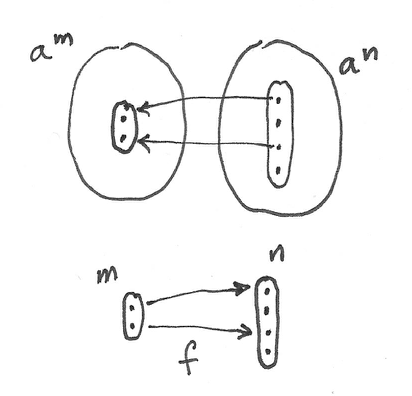

31 ทฤษฎีแบบLawvere (Lawvere Theories) (Sketch)
ในปัจจุบันคุณไม่สามารถพูดถึงการเขียนโปรแกรมแบบfunctionalโดยที่ไม่กล่าวถึงmonads แต่ก็มีจักรวาลคู่ขนานที่โดยบังเอิญที่Eugenio Moggiหันมาให้ความสนใจกับทฤษฎีแบบLawvereแทนที่จะเป็นmonads เรามาสำรวจจักรวาลนั้นกัน
31.1 Algebraสากล
ได้มีหลากหลายวิธีในการอธิบายalgebrasในหลากหลายขั้นของabstraction เราพยายามในการหาภาษาที่กว่างในการอธิบายสิ่งต่างๆอย่างmonoids groupsหรือrings ในขั้นที่ง่ายที่สุด การส้ราเหล่านี้นิยามoperationsบนสมาชิกของset บวกกับบางกฏที่ต้องถูกบรรลุโดยoperationsเหล่านี้ ตัวอย่างเช่นmonoidสามารถถูกนิยามในรูปแบบของoperationที่สลับกลุ่มได้ เราก็มีสมาชิกunitและกฏของunit แต่ด้วยการจินตนาการนิดหน่อยเราสามาถแปลงสมาชิกunitไปยังoperationว่าง(nullary operation)ที่คือoperationที่ไม่นำargumentsอะไรเลยและreturnsสมาชิกพิเศษของset ถ้าเราต้องการที่จะพูดเกี่ยวกับgroups เราเพื่มoperatorแบบunaryที่นำสมาชิกและreturns inverseของมัน ได้มีกฏของinverseด้านช้ายและขวาที่ไปพร้อมมัน ringนิยามสองoperatorsแบบbinaryกับกฏเพิ่มเติมและอื่นๆ
ภาพใหญ่คือว่าalgebraนั้นถูกนิยามโดยsetของoperationsแบบ\(n\)-aryสำหรับค่าต่างๆของ\(n\) และsetของidentitiesในความเท่ากัน identitiesเหล่านี้นั้นquantifiedแบบสากลทั้งหมด สมการการสลับหมู่ต้องถูกบรรลุโดยจัดหมู่ที่เป็นไปได้ของสามสมาชิกและอื่นๆ
โดยบังเอิญที่สิ่งนี้ขจัดfieldsออกจากการพิจารณา สำหรับเหตุผลเรียบง่ายที่ศูนย์(unitของการบวก)นั้นไม่มีinverseของการคูณ กฏของinverseสำหรับfieldไม่สามารถถูกquantifiedแบบสากล
นิยามนี้ของalgebraสากลสามารถถูกขยายไปยังcategoryนอกเหนือจาก\(\textbf{Set}\)ถ้าเราแทนที่operations(functions)ดัวยmorphisms แทนที่ของset เราเลือกวัตถุ\(a\)(ที่ถูกเรียกว่าวัตถุแบบgeneric)
operationแบบunaryนั้นคือแค่endomorphismของ\(a\) แต่แล้วอะไรคือaritiesอื่นๆ(arityคือตัวเลขของargumentsสำหรับoperationที่ให้มา) ? operationแบบbinary(arity 2)สามารถถูกนิยามในฐานะmorphismจากproduct\(a\times a\)กลับไปยัง\(a\) operation \(n\)-aryแบบทั่วไปคือmorphismจากยกกำลัง\(n\)ของ\(a\)ไปยัง\(a\)
\[ \alpha_n :: a^n \to a \]
operationแบบnullaryคือmorphismจากวัตถุสุดท้าย(ยกกำลังศูนย์ของ\(a\)) ดังนั้นสิ่งที่เราต้องการทั้งหมดในการที่จะนิยามalgebraใดๆก็ตามคือcategoryที่วัตถุต่างๆนั้นคือการยกกำลังของวัตถุพิเศษ\(a\)หนึ่ง algebraเฉพาะเจาะจงนั้นถูกเขียนลงไปในhom-setsของcategoryนี้ นี้คือทฤษฎีแบบLawvereอย่างย่อๆ
การได้มาของทฤษฎีแบบLawvereนั้นต้องผ่านหลายหลายขั้นตอนดังนั้นนี้คือแผนการ
- Categoryของsets\(\textbf{FinSet}\)
- skeletonของมัน\(\textbf{F}\)
- oppositeของมัน\(\textbf{F}^\text{op}\)
- ทฤษฎีแบบLawvere\(\textbf{L}\)คือวัตถุในcategory\(\textbf{Law}\)
- model\(M\)ของcategoryแบบLawvereคือวัตถุในcategory\(\textbf{Mod}(\textbf{Law}, \textbf{Set})\)

31.2 ทฤษฎีแบบLawvere
ทฤษฎีแบบLawvereทั้งหมดมีแกน(backbone)แบบเดียวกัน วัตถุทั้งหมดในทฤษฎีแบบLawvereนั้นสร้างมาจากหนึ่งวัตถุโดยการใช้products(จริงๆก็คือการยกกำลัง) แต่แล้วอะไรคือวิธีการที่เรานิยามproductsเหล่านี้ในcategoryทั่วๆไป? มันกลับมาเป็นว่าเราสามารถนิยามproductsโดยการใช้การโยงจากcategoryที่ง่ายกว่า ในความเป็นจริงแล้วcategoryที่ง่ายกว่านี้อาจจะนิยามcoproductsแทนที่จะเป็นproducts และเราจะใช้functorแบบcontravariantในการฝังมันในcategoryเป้าหมายของเรา functorแบบcontravariantเปลี่ยนcoproductsไปยังproductsและinjectionsไปยังprojections
ทางเลือกแยยทั่วๆไปสำหรับแกนของทฤษฎีแบบLawvereคือcategoryของsetsจำกัด\(\textbf{FinSet}\) มันมีsetว่าง\(\emptyset\) setที่มีสมาชิกเดียว\(1\) setที่มีสองสมาชิก\(2\) และอื่นๆ วัตถุทั้งหมดในcategoryนี้สามารถถูกสร้างจากsetที่มีสมาชิกเดียวโดยการใช้coproducts(โดยมองsetว่างในฐานะกรณีพิเศษของcoproductแบบnullary) ตัวอย่างเช่นsetที่มีสองสมาชิกคือsumของสองsetที่มีสมาชิกเดียว \(2=1+1\) ในการแสดงในHaskell
type Two = Either () ()แต่ถึงแม้มันเป็นธรรมชาติในการคิดว่าได้มีแค่หนึ่งsetว่าง ได้อาจจะมีหลายsetที่มีสมาชิกเดียวที่จำเพาะ โดยเฉพาะเช่นset\(1+\emptyset\)นั้นแตกต่างจากset\(\emptyset+1\)และแตกต่างจาก\(1\)ถึงแมัพวกกันจะisomorphic coproductในcategoryของsetนั้นไม่มีความสลับกลุ่ม เราสามารถแก้สถานการณ์นั้นโดนการสร้างcategoryที่ชี้หาsetที่isomorphicกันทั้งหมด categoryอย่างนั้นถูกเรียกว่าskeleton ในอีกความหมายหนึ่งbackboneของทฤษฎีแบบLawvereคือskeleton\(\textbf{F}\)ของ\(\textbf{FinSet}\) วัตถุในcategoryนี้สามารถถูกชี้กับเลขธรรมชาติ(รวมไปถึงศูนย์)ที่ตรงกันกับการนับสมาชิกใน\(\textbf{FinSet}\) coproductมีบทบาทในการบวก morphismsใน\(\textbf{F}\)คู่กับfunctionระหว่างsetจำกัด ตัวอย่างเช่นได้มีmorphismที่เป็นเอกลักษณ์จาก\(n\)ไปยัง\(\emptyset\)(ยกเว้น\(\emptyset\to\emptyset\)) morphisms \(n\)จาก\(1\)ไปยัง\(n\)(morphisms) morphismหนึ่งจาก\(n\)ไปยัง\(1\)และอื่นๆ ในที่นี้\(n\)นั้นบ่งบอกถึงวัตถุใน\(\textbf{F}\)ที่คู่กับsetที่มีสมาชิกทั้งหมดใน\(\textbf{FinSet}\)ที่ถูกชี้ตัวผ่านisomorphisms
ในการใช้category\(\textbf{F}\)เราสามารถนิยามอย่างรัดกุมทฤษฎีแบบLawvereในฐานะcategory\(\textbf{L}\) ที่มีfunctorพิเศษเป็นคู่อย่าง
\[ I_\textbf{L}::\textbf{F}^\text{op}\to\textbf{L} \]
functorนี้อาจจะเป็นbijectionบนวัตถุและมันอาจจะคงproductที่จำกัดไว้(productใน\(\textbf{F}^\text{op}\)นั้นเหมือนกับcoproductsใน\(\textbf{F}\))
\[ I_\textbf{L}(m\times n) = I_\textbf{L}m\times I_\textbf{L}n \]
คุณอาจจะในบางครั้งเห็นfunctorนี้ถูกทำให้อยู่ในฐานะidentity-บน-วัตถุ ที่หมายความว่าวัตถุใน\(\textbf{F}\)และ\(\textbf{L}\)นั้นเหมือนกัน ดังนั้นเราจะใช้ชื่อเดียวกันกับมัน เราจะเขียนมันในฐานะจำนวนธรรมชาติ แต่ต้องจำไว้ว่าวัตถุใน\(\textbf{F}\)นั้นำปม่เหมือนกับset(พวกมันคือclasseต่างๆของsetที่isomorphicกัน)
hom-setsใน\(\textbf{L}\)นั้นโดยทั่วไปนั้นมีคุณค่ามากกว่าตังที่อยู่ใน\(\textbf{F}^\text{op}\) พวกมันอาจจะเก็บmorphismนอกเหนือจากสิ่งที่ตรงกับfunctionต่างๆใน\(\textbf{FinSet}\)(ตัวหลังนั้นในบางครั้งถูกเรียกว่าoperationsของproductพื้นฐาน(basic product operations)) กฎของความเท่ากันของทฤษฎีแบบLawvereนั้นถูกเขียนในmorphismsเหล่านี้
ข้อสังเกตที่สำคัญคือว่าsetที่มีสมาชิกเดียว\(1\)ใน\(\textbf{F}\)นั้นถูกโยงไปยังบางวัตถุที่เราก็เรียกว่า\(1\)ใน\(\textbf{L}\) และวัตถุอื่นๆใน\(\textbf{L}\)นั้นคือตัวยกกำลังของวัตถุนี้โดยอัตโนมัติ ตัวอย่างเช่นsetที่มีสองสมาชิก\(2\)ใน\(\textbf{F}\)คือcoproduct\(1+1\)ดังนั้นมันต้องถูกโดยงไปยังproduct\(1\times1\)(หรือ\(1^2\))ใน\(\textbf{L}\) ในแนวทางนี้แล้วcategory\(\textbf{F}\)กระทำเหมือนlogarithmของ\(\textbf{L}\)
ภายในmorphismsใน\(\textbf{L}\) เรามีสิ่งต่างๆที่ย้ายโดยfunctor\(I_\textbf{L}\)จาก\(\textbf{F}\) พวกมันมีบทบาททางโครงสร้างใน\(\textbf{L}\) โดยเฉพาะเช่นinjectionsของcoproduct\(i_k\)กลายมาเป็นprojectionsของproduct\(p_k\) วิธีคิดที่มีประโยชน์คือการจินตนาการถึงprojectionของ
\[ p_k :: 1^n \to 1 \]
ในฐานะตัวเริ่มต้นสำหรับfunctionที่มี\(n\)ตัวแปลที่ไม่สนใจทั้งหมดแค่แปรที่\(k\)เท่านั้น ในทางกลับกันmorphismsคงที่\(n\to1\)ใน\(\textbf{F}\) หลายมาเป็นmorphismsแบบdiagonal\(1\to1^n\)ใน\(\textbf{L}\) พวกมันตรงกับการทำสำเนาของตัวแปรต่าง
morphismsที่น่าสนใจใน\(\textbf{L}\) คือตัวต่างๆที่นิยามoperationsแบบ\(n\)-aryที่นอกเหนือจากprojections มันคือmorphismเหล่านี้ที่แยกทฤษฎีแบบLawvereออกจากอีกตัวหนึ่ง สิ่งเหล่านี้คือการคูณ การบวกและการเลือกสมาชิกunitและอื่นๆที่นิยามalgebra แต่ในการทำให้\(\textbf{L}\)เป็นcategoryแบบสมบูรณ์ เราก็ต้แงการoperationsแบบผสม\(n\to m\)(หรือในแบบเดียวกันคือ\(1^n \to 1^m\)) เนื่องด้วยโครงสร้างที่เรียบง่ายของcategory พวมกันกลับมาเป็นproductของmorphismsที่เรียบง่ายกว่าของtype\(n \to 1\) นี้คือการgeneralizationเท่าไปของประโยคที่ว่าfunctionที่returns productกลับมาคือproductของfunctions(หรือในการที่เราได้เห็นก่อนหน้านี้นั้นคือว่าhom-functorนั้นcontinuous)
Lawvereก่อให้เกิดcategory\(\textbf{Law}\)ที่morphismต่างๆคือfunctorsที่คงไว้ซึ่งproductจำกัดและสลับกลุ่มได้กับfunctors\(I\) ถ้ามีสองทฤษฎี \((\textbf{L}, I_{\textbf{L}})\)และ\((\textbf{L'}, I'_{\textbf{L'}})\) morphismระหว่างมันคือfunctor\(F :: \textbf{L} \to \textbf{L'}\)ในการที่ว่า
\[ \begin{gather*} F\ (m \times n) = F\ m \times F\ n \\ F \circ I_{\textbf{L}} = I'_{\textbf{L'}} \end{gather*} \]
morphismระหว่างทฤษฎีแบบLawvereเก็บแนวคิดของการตีความของหนึ่งทฤษฎีภายในอีกตัว ตัวอย่างเช่นการคูณของgroupอาจจะถูกตีความในฐานะการคูณแบบmonoidถ้าเราไม่สนใจinverse
ตัวอย่างที่ตรงไปตรงมาที่เรียบง่ายที่สุดของcategoryแบบLawvereคือ\(\textbf{F}^\text{op}\)มันเอง(ที่ตรงกับตัวเลือกของfunctor identityสำหรับ\(I_\textbf{L}\))ทฤษฎีแบบLawvereที่ไม่มีoperationsหรือกฏกลับมาเป็นวัตถุเริ่มต้นใน\(\textbf{Law}\)
ในจุดๆนี้มันอาจจะมีประโยชน์ในการแสดงตัวอย่างที่ไม่ตรงไปตรงมาของทฤษฎีแบบLawvere แต่มันอาจจะยากในการอธิบายโดยที่ไม่สนใจว่าmodelคืออะไร
31.3 ModelsของทฤษฎีแบบLawvere
กุญแจในการทำความเข้าใจทฤษฎีแบบLawvereนั้นคือการเข้าใจได้ว่าทฤษฎีแบบนี้เป็นการgeneralizationแต่ละalgebrasหลากหลายตัวที่มีฌครงสร้างเดียวกัน ตัวอย่างเช่นทฤษฎีแบบLawvereของmonoidนั้นอธิบายแก่นแท้ของความเป็นmonoid มันต้องถูกต้องสำหรับทุกๆmonoid monoidบางตัวจะกลายมาเป็นmodelของtheoryแบบนั้น modelนั้นถูกนิยามในฐานะfunctorจากทฤษฎีแบบLawvere\(\textbf{L}\)ไปยังcategoryของ\(\textbf{Set}\)(ได้มีการgeneralizationของทฤษฎีแบบLawvereที่ใช้categoryอื่นๆสำหรับmodelแต่ในที่นี้เราจะเพ่งเล็งไปที่\(\textbf{Set}\)อย่างเดียว) เนื่องด้วยโครงสร้างของ\(\textbf{L}\)ขึ้นอยู่อย่างมากกับproduct เราต้องการว่าfunctorแบบนี้ต้องคงไว้ซึ่งproductsจำกัด modelของ\(\textbf{L}\)นั้นก็ถูกเรียกว่าalgebraบนทฤษฎีแบบLawvere\(\textbf{L}\) ดังนั้นถูกนิยามโดยfunctorอย่าง
\[ \begin{gather*} M :: \textbf{L} \to \textbf{Set} \\ M\ (a \times b) \cong M\ a \times M\ b \end{gather*} \]
สังเกตว่าเราต้องการคงไว้ของproductsไว้แค่จนถึงisomorphism สิ่งนี้นั้นสำคัญมากเพราะว่าการคงไว้แบบเข้มงวดของproductsก็จะขจัดทฤษฎีต่างๆที่น่าสนใจ
คงไว้ของproductโดยmodelหมายความว่าimageของ\(M\)ใน\(\textbf{Set}\)คือsetที่ต่อเนื่องกันสร้างโดยpowerของset\(M \ 1\) คือimageของวัตถุ\(1\)จาก\(\textbf{L}\) เรามาเรียกsetนี้ว่า\(a\)(setนี้นั้นในบางครังถูกเรียกว่าsortและalgebraแบบนั้นถูกเรียกว่าsingle-sorted ได้มีการgeneralizationแบบของทฤษฎีแบบLawvereไปยังalgebrasแบบmulti-sorted) โดยเฉพาะoperationsแบบbinaryจาก\(\textbf{L}\)นั้นถูกโยงไปยังfunctions
\[ a \times a \to a \]
เหมือนกับfunctorใดๆก็ตาม มันเป็นไปได้ว่าหลายmorphismsใน\(\textbf{L}\)นั้นถูกยุบไปยังfunctionเดียวกันใน\(\textbf{Set}\)
โดยบังเอิญความจริงที่ว่ากฏทั้งหมดนั้นเป็นความเท่ากับที่สามารถquantifiedแบบสากลหมายความว่าทุกๆทฤษฎีแบบLawvereมีmodelที่ตรงไปตรงมาคือfunctorคงที่ที่โยงทุกวัตถุไปยังsetที่มีสมาชิกเดียวและทุกๆmorphismsไปยังfunction identityของมัน
morphismทั่วๆไปใน\(\textbf{L}\)ของรูปแบบ\(m\to n\)นั้นถูกโยงไปยังfunction
\[ a^m \to a^n \]
ถ้าเรามีสองmodelที่แตกต่างกัน\(M\)และ\(N\) การแปลงแบบธรรมชาติระหว่างพวกมันคือชุดของfunctionsที่ถูกชี้โดย\(n\)
\[ \mu_n :: M\ n \to N\ n \]
หรือในแบบเดียวกัน
\[ \mu_n :: a^n \to b^n \]
ที่\(b = N \ 1\)
สังเกตว่าเงื่อไขความเป็นธรรมชาติรับรองการคงไว้ของopeartionของ\(n\)-aryอย่าง
\[ N\ f \circ \mu_n = \mu_1 \circ M\ f \]
ที่\(f :: n \to 1\)คือ\(n\)-ary operation ใน\(\textbf{L}\).
functorsที่นิยามmodelก่อให้เกิดcategoryของmodelต่างๆ\(\textbf{Mod}(\textbf{L}, \textbf{Set})\) กับการแปลงแบบธรรมชาติในฐานะmorphisms
ลองพิจารณาmodelสำหรับงทฤษฎีแบบLawvereที่ตรงไปตรงมาอย่าง\(\textbf{F}^\text{op}\) modelแบบนี้นั้นถูกกำหนดโดยค่าของมันที่\(1\) \(M \ 1\) เนื่องด้วย\(M \ 1\)สามารถเป็นsetใดๆก็ตามได้มีmodelที่มากมายพอๆกับจำนวณsetใน\(\textbf{Set}\) นาเหนือจากไปนี้ทุกๆmorphismใน\(\textbf{Mod}(\textbf{F}^\text{op}, \textbf{Set})\)(ที่คือการแปลงแบบธรรมชาติระหว่างfunctor\(M\)และ\(N\))นั้นถูกกำหนดอย่าง เป็นเอกลักษณ์โดยส่วนประกอบของมันที่ \(M \ 1\) ในทางกลับกันทุกๆfunction\(M\ 1 \to N\ 1\)ก่อให้เกิดการแปลงแบบธรรมชาติระหว่างสองmodel \(M\)และ\(N\) ดังนั้น\(\textbf{Mod}(\textbf{F}^\text{op}, \textbf{Set})\)นั้นเท่ากับ\(\textbf{Set}\)
31.4 ทฤษฎีของMonoids
ตัวอย่างที่ไม่ตรงไปตรงมาแต่ง่ายที่สุดของทฤษฎีแบบLawvereอธิบายโครงสร้างของmonoids มันคือทฤษฎีเดียวที่สกัดโครงสร้างของmonoidsที่เป็นไปได้ทั้งหมดในความหมายที่ว่าmodelของทฤษฎีนี้ขยายไปยังทั้งcategory\(\textbf{Mon}\)ของmonoids เราได้เห็นการสร้างแบบสากลแล้วที่แสดงว่าทุกๆmonoidสามารถถูกได้มาจากmonoidอิสระที่เหมาะสมโดยการตามหาsetย่อยของmorphisms ดังนั้นmonoidอิสระตัวหนึ่งนั้นได้วางนัยmonoidหลายๆตัวแล้ว แต่ไต้มีmonoidอิสระนับไม่จำกัด ทฤษฎีแบบLawvereสำหรับ\(\textbf{L}_\textbf{Mod}\)รวมพวกมันทั้งหมดในการสร้างที่งดงามเพียงครั้งเดียว
ทุกๆmonoidต้องมีunit ดังนั้นเราจำเป็นต้องมีmorphismพิเศษ\(\eta\)ใน\(\textbf{L}_\textbf{Mod}\)ที่จาก\(0\)ไปยัง\(1\) สังเกตว่าได้ไม่สามารถมีmorphismที่ตรงกันใน\(\textbf{F}\) morphismแบบนั้นอาจจะไปในทิศทางตรงกันข้ามจาก\(1\)ไปยัง\(0\)ที่ใน\(\textbf{FinSet}\)ก็จะคือfunctionจากsetที่มีสมาชิกเดียวไปยังsetว่าง functionแบบนั้นไม่มีอยู่
ต่อไปลองพิจารณาmorphisms\(2 \to 1\)ที่คือสมาชิิกของ\(\textbf{L}_\textbf{Mod}(2,1)\)ที่ต้องมีรูปแบบแรกเริ่มของoperationsแบบbinaryทั้งหมด ในการสร้างmodelsใน\(\textbf{Mod}(\textbf{L}_\textbf{Mod}, \textbf{Set})\) morphismsเหล่านี้จะถูกโยงไปยังfunctionจากproductแบบCartesianของ\(M\ 1 \times M\ 1\)ไปยัง\(M\ 1\) ในอีกความหมายหนึ่งfunctionที่มีสองargument
คำถามคือ มีfunctionsที่มีสองargumentsกี่ตัวที่เราสามารถเขียนโดยการใช้แค่operatorของmonoid เรามาเรียกสองargument\(a\)และ\(b\) ได้มีfunctionหนึ่งที่ละเว้นทั้งสองargumentsและreturn unitของmonoid แล้วก็มีสองprojectionsที่return\(a\)และ\(b\)ตามลำดับ พวกมันนั้นตามด้วยfunctionsที่return\(ab\), \(ba\), \(aa\), \(bb\), \(aab\)และอื่นๆ ในความเป็นจริงแล้วได้มีfunctionแบบนี้เป็นจำนวนfunctionของสองargumentที่เท่ากับสมาชิกในmonoidอิสระที่มีgenerators\(a\)และ\(b\) สังเกตว่า\(\textbf{L}_\textbf{Mod}(2,1)\)ต้องมีmorphismเหล่านี้นเพราะว่าหนึ่งในmodelคือmonoidอิสระ ในmonoidอิสระ พวกมันตรงกับfunctionsแต่ละfunctions modelอื่นๆอาจจะยุบหลายmorphismใน\(\textbf{L}_\textbf{Mod}(2,1)\)ไปยังfunctionเดียว แต่ไม่สำหรับmonoidอิสระ
ถ้าเราเรียกmonoidอิสระที่มี\(n\) generatorsว่า\(n^*\) เราอาจจะจับคู่hom-set \(\textbf{L}(2,1)\)กับhom-set\(\textbf{Mod}(1^*,2^*)\)ใน\(\textbf{Mod}\)ที่คือcategoryของmonoid โดยทั่วไปแล้วเราเลือก\(\textbf{L}_\textbf{Mod}(m,n)\)ไปยัง\(\textbf{Mod}(n^*,m^*)\) ในอีกความหมายหนึ่งcategory\(\textbf{L}_\textbf{Mod}\)นั้นตรงกันข้ามกับcategoryของmonoidsอิสระ
categoryของmodelsของทฤษฎีแบบLawvereสำหรับmonoids\(\textbf{Mod}(\textbf{L}, \textbf{Set})\)นั้นเท่ากับcategoryของmonoidทั้งหมดอย่าง\(\textbf{Mod}\)
31.5 ทฤษฎีแบบLawvereและMonad
ในการที่คุณอาจจะจำได้ทฤษฎีพีชคณิตสามารถถูกอธิบายโดยการใช้monad (โดยเฉพาะเช่นพีชคณิตสำหรับmonad) มันจรึงไม่แปลกใจที่ได้มีความเชื่อมโยงระหว่างทฤษฎีแบบLawvereและmonad
เนิ่มด้วยเรามาดูในวิธีที่ทฤษฎีแบบLawvereก่อให้เกิดmonad มันทำแบบนี้ผ่านadjunctionระหว่างfunctorหลงลืมกับfunctorอิสระ functorหลงลืม\(U\)กำหนดsetของแต่ละmodel setนี้นั้นถูกให้มาโดยการหาค่าของfunctor\(M\)จาก\(\textbf{Mod}(\textbf{L}, \textbf{Set})\)ที่วัตถุ\(1\)ใน\(\textbf{L}\)
ในอีกทางของการหา\(U\)คือการใช้ประโยชน์ของความจริงที่ว่า\(\textbf{F}^\text{op}\) คือวัตถุแรกเริ่มใน\(\textbf{Law}\) มันหมายความว่าสำหรับทฤษฎีแบบLawvere\(\textbf{L}\)ได้มีfunctorที่เป็นเอกลักษณ์\(\textbf{F}^\text{op}\to\textbf{L}\) functorนี้สร้างfunctorตรงข้ามบนmodel(เนื่องด้วยmodelต่างๆนั้นคือfunctorsจากทฤษฎีไปยังsets)
\[ \textbf{Mod}(\textbf{L}, \textbf{Set})\to\textbf{Mod}(\textbf{F}^\text{op}, \textbf{Set}) \]
มันสามารถถูกแสดงว่า\(U\)ที่ถูกนิยามนั้นคือadjointด้านช้ายโดยตลอดนั้นคือfunctorอิสระ\(F\)
มันนั้นสามารถมองเห็นได้อย่างง่ายสำหรับsetจำกัด functorอิสระ\(F\)สร้างalgebraอิสระ algebraอิสระนั้นคือmodelโดยเฉพาะใน\(\textbf{Mod}(\textbf{L}, \textbf{Set})\)นั้นถูกสร้างโดยgeneratorแบบsetจำกัด\(n\) เราสามารถเขียน\(F\)ในฐานะfunctorที่สามารถมีตัวแทนได้อย่าง
\[ \textbf{L}(n,-) :: \textbf{L}\to\textbf{Set} \]
ในการแสดงว่ามันนั้นอิสระ สิ่งที่เราต้องทำทั้งหมดในการแสดงว่ามันคือadjointด้านช้ายไปยังfunctorหลงลืมอย่าง
\[ \textbf{Mod}(\textbf{L}(n, -), M) \cong\textbf{Set}(n, U(M)) \]
เรามาทำให้ด้านขวาง่ายขึ้นอย่าง
\[ \textbf{Set}(n, U(M))\cong\textbf{Set}(n, M \ 1)\cong (M \ 1)^n\cong M \ n \]
(ผมได้ใช้ความเป็นจริงที่ว่าsetของmorphismsนั้นisomorphicไปยังexponentialที่ในกรณีนี้คือแค่productที่ผ่านทำซ้ำ) adjunctionนั้นคือผลของYoneda lemmaว่า
\[ [\textbf{L},\textbf{Set}]\big( \textbf{L}(n, -), M) \big)\cong M \ n \]
ด้วยกันfunctorหลงลืมและอิสระนิยามmonad\(T=U\circ F\)บน\(\textbf{Set}\)ดังนั้นทุกๆทฤษฎีแบบLawvereสร้างmonad
มันกลับมาเป็นว่าcategoryของalgebrasสำหรับmonadนี้นั้นเท่ากับcategoryของmodel
คุณอาจจะจำได้ว่าalgebraแบบmonadนิยามวิธีการในการหาค่าexpressionที่ถูกสร้างโดยการใช้monad ทฤษฎีแบบLawvereนิยามoperationแบบn-aryที่สามารถถูกใช้ในการสร้างexpressions modelให้วิธีการมาในการหาค่าของexpressionเหล่านี้
แต่ความสัมพันธ์ระหว่างmonadและทฤษฎีแบบLawvereไม่ได้ไปในทั้งสองทิศทาง มีแค่monadแบบที่มีarityที่จำกัด(finitary)ที่นำไปสู่ทฤษฎีแบบLawvere monadแบบที่มีarityที่จำกัดนั้นก่อมาจากfunctorที่มีarityที่จำกัด การกระทำของมันบนset\(a\)ใดๆก็ตามสามารถถูกประเมินค่าโดยการใช้coendว่า
\[ F\ a = \int^n a^n \times (F\ n) \]
เนื่องด้วยcoendนั้นวางนัยแบบทั่วไปของcoproductหรือsum สูตรแบบนี้คือการgeneralizationของการขยายอนุกรมกำลัง หรือเราสามารถใช้วิธีคิดที่ว่าfunctorนั้นคือวางนัยแบบทั่วไปของภาชนะ ในกรณีนี้แล้วภาชนะที่มีarityที่จำกัดของ\(a\)ต่างๆสามารถถูกอธิบายในฐานะsumของรูปและเนื้อหา ในที่นี้\(F \ n\)คือsetของรูปร่างของการเก็บ\(n\)สมาชิกและเนื้อหาคือ\(n\)-tupleของสมาชิก ตัวมันเองคือสมาชิกของ\(a^n\) ตัวอย่างเช่นlist(ในฐานะfunctor)นั้นมีarityที่จำกัด ที่มีรูปหนึ่งสำหรับแต่และarity treeนั้นมีรูปร่างมากกว่าarityและอื่นๆและอื่นๆ
ตัวอย่างแรก monadsทั้งหมดที่ถูกสร้างจากทฤษฎีแบบLawvereนั้นมีarityที่จำกัด และพวกกันสามารถถูกแสดงใรฐานะcoends
\[ T_{\textbf{L}}\ a = \int^n a^n \times \textbf{L}(n, 1) \]
ในทางกลับกันการให้มาซึ่งmonadที่มีarityที่จำกัด\(T\)บน\(\textbf{Set}\) เราสามารถสร้างทฤษฎีแบบLawvere เราเริ่มโดยการสร้างcategoryแบบKleisliสำหรับ\(T\) ในการคุณอาจจะจำได้ morphismในcategoryแบบKleisliสำหรับจาก\(a\)ไปยัง\(b\)นั้นให้มาโดยmorphismในcategoryภายใต้
\[ a \to T\ b \]
ในตอนที่เราจำกัดบนsetจำกัด สิ่งนี้มาเป็น
\[ m \to T\ n \]
categoryตรงกันข้ามไปยังcategoryแบบKleisliนี้\(\textbf{KL}_T^\text{op}\)ถูกจำกัดไปยังsetที่จำกัดคือทฤษฎีแบบLawvereในที่เราสนใจ โดยเฉพาะเช่นhom-set\(\textbf{L}(n,1)\)ที่อธิบายoperationsแบบ\(n\)-aryใน\(\textbf{L}\)นั้นให้มาโดยhom-set\(\textbf{KL}_T(1,n)\)
มันกลายมาเป็นว่าmonadส่วนใหญ่ที่เราพบในการเขียนโปรแกรมนั้นมีarityที่จำกัด ที่มีข้อยกเว้นที่น่าสนใจของmonadแบบcontinuation มันเป็นไปได้ในการขยาย แนวคิดของทฤษฎีแบบLawvereนอกเหนือจากoperationที่มีarityที่จำกัด
31.6 MonadในฐานะCoends
เรามาสำรวจสูตรcoendในรายละเอียดมากขึ้น
\[ T_\textbf{L}a=\int^na^n\times\textbf{L}(n,1) \]
ในการเริ่มต้น coendนี้นั้นนำมาบนprofunctor\(P\)ใน\(\textbf{F}\)ที่ถูกนิยามว่า
\[ P\ n\ m = a^n \times \textbf{L}(m, 1) \]
profunctorนี้เป็นcontravariantในargument\(n\)แรก ลองพิจารณาในวิธีการที่มันlift morphismต่างๆ morphismsใน\(\textbf{FinSet}\)นั้นคือการโยงของsetจำกัด\(f::m\to n\) การโยงแบบนั้นอธิบายการเลือกของสมาชิก\(m\)ตัวจากsetที่มี\(n\)สมาชิก (การเลือกช้ำนั้นเป็นไปได้) มันสามารถถูกliftไปยังการโยงของการยกกำลังของ\(a\)โดนเฉพาะเช่น(สังเกตทิศทาง)
\[ a^n \to a^m \]
การยกนั้นแค่เลือกสมาชิก\(m\)จากtupleของ\(n\)สมาชิก(อาจจะเป็นไปได้กับการเลือกช้ำ)

ตัวอย่างเช่น เรามานำ\(f_k :: 1 \to n\)ที่คือการเลือกของสมาชิกที่\(k\)จากsetที่มี\(n\)สมาชิก มันliftไปยังfunctionที่นำtupleของ\(n\)สมาชิกของ\(a\)และreturnตัวที่\(k\)มา
หรือเรานำ\(f::m\to1\)มา ที่คือfunctionคงที่ที่โยงสมาชิก\(m\)ตัวทั้งหมดไปยังตัวหนึ่ง มันที่ถูกliftคือfunctionที่นำสมาชิกเดียวของ\(a\)และทำช้ำมัน\(m\)รอบ
\[ \lambda{}x \to (\underbrace{x, x,\ ...\ , x}_{m}) \]
คุณอาจจะสังเกตว่ามันนั้นไม่ชัดเจนในทันทีว่าprofunctorที่เราสนใจนั้นคือcovariantในargumentที่สอง hom-functor\(\textbf{L}(m,1)\)นั้นเป็นcontravariantใน\(m\)จริงๆ แต่เรากำลังนำcoendไปไม่ในcategory\(\textbf{L}\)แต่ในcategory\(\textbf{F}\) ตัวแปลcoend \(n\)นั้นไปบนsetที่จำกัด(หรือแกนของสิ่งนั้น) category\(\textbf{L}\)เก็บตรงกันข้ามของ\(\textbf{F}\) ดังนั้นmorphism\(m\to n\)ใน\(\textbf{F}\)คือสมาชิกของ\(\textbf{L}(n,m)\)ใน\(\textbf{L}\) (การembedนั้นให้มาโดยfunctor\(I_\textbf{L}\))
เรามาตรวจสอบการใช้งานของ\(\textbf{L}(m,1)\)ในฐานะfunctorจาก\(\textbf{F}\)ไปยัง\(\textbf{Set}\) เราต้องการที่จะlift function\(f::m\to n\)ดังนั้นเป้าหมายของเราคือการเขียนfunctionจาก\(\textbf{L}(m,1)\)ไปยัง\(\textbf{L}(n,1)\) ตามจากfunction\(f\)ได้มีmorphismใน\(\textbf{L}\)จาก\(n\)ไปยัง\(m\)(สังเกตทิศทาง) การประกอบก่อนของmorphismนี้กับ\(\textbf{L}(m,1)\)ให้setย่อยของ\(\textbf{L}(n,1)\)อย่าง
สังเกตว่าการliftของfunction\(1\to n\)เราสามารถไปจาก\(\textbf{L}(1,1)\)ไปยัง\(\textbf{L}(n,1)\) เราจะมาใช้ความจริงนี้หลังจากนี้
productของfunctorแบบcontravariant\(a^n\)และfunctorแบบcovariant\(\textbf{L}(m,1)\)คือprofunctor\(\textbf{F}^\text{op}\times\textbf{F}\to\textbf{Set}\) จำได้ว่าcoendสามารถถูกนิยามในฐานะcoproduct(การบวกแบบdisjoint)ของทุกๆสมาชิกแนวทแยงของprofunctorที่ที่บางสมาชิกนั้นถูกระบุ การระบุนั้นตรงกับเงื่อนไขcowedge
ในที่นี้coendเริ่มในฐานะการบวกแบบdisjointของsets\(a^n \times \textbf{L}(n, 1)\)บน\(n\)ต่างๆทั้งหมด การระบุสามารถถูกสร้างโดยการแสดงcoendในฐานะcoequalizer เราเริ่มด้วยตัวที่ไม่ได้อยู่ในแนวทแยง\(a^n \times \textbf{L}(m, 1)\) ในการได้มาของตัวในแนวทแยง เราสามารถใช้morphism\(f::m\to n\)ไปที่ตัวแรกหรือตัวที่สองของproduct ผลลัพธ์ทั้งสองก็ถูกระบุว่า
\[ f::m\to n \]
ผมได้แสดงก่อนหน้านี้ว่าการliftของ\(f::1\to n\)ทำให้เกิดสองการแปลงอย่างนี้
\[ a^n\to a \]
และ
\[ \textbf{L}(1, 1) \to \textbf{L}(n, 1) \]
ดังนั้นเริ่มมาจาก\(a^n\times\textbf{L}(1,1)\)เราสามารถไปถึงทั้งสอง
\[ a\times\textbf{L}(1, 1) \]
ในตอนที่เราlift\(\langle f,\operatorname{id}\rangle\)และ
\[ a^n\times\textbf{L}(n, 1) \]
ในตอนที่เราlift\(\langle \operatorname{id}, f\rangle\) สิ่งนี้ไม่ได้หมายความว่าทุกๆสมาชิกของ\(a^n\times\textbf{L}(n, 1)\)สามารถถูกระบุด้วย\(a\times\textbf{L}(1, 1)\) นั้นก็เพราะว่าไม่ทุกสมาชิกของ\(\textbf{L}(n, 1)\)สามารถเข้าถึงจาก\(\textbf{L}(1, 1)\) จำได้ว่าเราสามารถแค่lift morphismsจาก\(\textbf{F}\) operationแบบ\(n\)-aryที่ไม่ตรงไปตรงมาใน\(\textbf{L}\)ไม่สามารถถูกสร้างโดยการlift morphism\(f::1\to n\)
ในอีกความหมายหนึ่ง เราสามารถแค่ระบุaddends(endsเกี่ยวกับการบวก)ในสูตรของcoendที่\(\textbf{L}(n, 1)\)สามารถไปถึงจาก\(\textbf{L}(1, 1)\)ผ่านการใช้งานของmorphismsแบบเรียบง่าย พวกมันทั้งหมดนั้นเท่ากับ\(a\times\textbf{L}(1, 1)\) morphismsแบบเรียบง่ายนั้นคือตัวที่คือimageของmorphismต่างใน\(\textbf{F}\)
เรามาดูว่าสิ่งเหล่านี้ทำงานอย่างไรในกรณีที่ง่ายที่สุดของทฤษฎีแบบLawvere \(\textbf{F}^\text{op}\)มันเอง ในทฤษฎีแบบนี้ ทุกๆ\(\textbf{L}(n, 1)\)สามารถถูกเข้าถึงได้จาก\(\textbf{L}(1, 1)\) นั้นก็เพราะว่า\(\textbf{L}(1, 1)\)คือสิ่งที่มีสมาชิกเดียวที่เก็บแค่morphism identity และ\(\textbf{L}(n, 1)\)แค่เก็บmorphismsที่ตรงกับinjections \(1\to n\)ใน\(\textbf{F}\)ที่คือmorphismsแบบทั่วไป ดังนั้นทุกaddendsในcoproductนั้นเท่ากันทั้งหมดและเราได้สิ่งนี้มา
\[ T \ a = a\times\textbf{L}(1, 1) \]
ที่คือmonad identity
31.7 ทฤษฎีแบบLawvereของผลข้างเคียง(Side Effect)
เนื่องด้วยได้มีความสัมพันธ์ที่แน่นแบบนี้ระหว่างmonadและทฤษฎีแบบLawvere มันเป็นธรรมชาติมากในการถามคำถามว่าทฤษฎีแบบLawvereสามารถถูกใช้ในการเขียนโปรแกรมในฐานะทางเลือกนอกเหนือจากmonad ปัญกาใหญ่ของmonadคือพวกมันไม่ปนะกอบกันอย่างง่ายๆ ไม่มีสูตรทั่วไปในการสร้างตัวแปลงของmonad ทฤษฎีแบบLawvereมีข้อดีในจุดๆนี้คือพวกมันสามารถประกอบกันโดยการใช้coproductและproductแบบtensor ในอีกทางหนึ่ง มีแค่monadที่มีarityจำกัดที่สามารถถูกแปลงไปยังทฤษฎีแบบLawvere ตัวที่อยู่นอกเหนือจากนี้คือmonadแบบcontinuation(ต่อเนื่อง) ได้มีการค้นคว้าที่กำลังทำอยู่ในพื้นที่นี้(ลองดูในบรรณานุกรม)
ในการให้คุณได้ลองสัมผัสในวิธีการที่ทฤษฎีแบบLawvereสามารถถูกใช้กับoperationแบบnullaryหนึ่ง\(0\to1\) modelของทฤษฎีนี้คือfunctorที่โยง\(1\)ไปยังบางset\(a\)และโยงoperationแบบnullaryไปยังfunction
raise :: () -> aเราสามารถได้monadMaybeกลับมาโดยการใช้สูตรของcoend เรามาพิจารณาว่าการบวกของoperationแบบnullaryทำกับhom-sets\(\textbf{L}(n,1)\) นอกเหนือจากการสร้าง\(\textbf{L}(0,1)\)(ที่นั้นไม่อยู่ใน\(\textbf{F}^\text{op}\)) มันก็เพิ่มmorphismใหม่ไปยัง\(\textbf{L}(n,1)\) พวกมันคือผลของmorphismประกอบของtype\(n\to0\)กับ\(0\to1\)ของเรา การเพิ่มนี้นั้นถูกระบุทั้งหมดกับ\(a^0\times\textbf{L}(0,1)\)ในสูตรของcoendเพราะว่าพวกมันสามารถถูกได้มาจาก
\[ a^n\times\textbf{L}(0, 1) \]
โดยการlift\(0\to n\)ในทั้งสองแบบที่แตกต่างกัน
\[ f::0\to n \]
coendลดไปยัง
\[ T_\textbf{L}a=a^0+a^1 \]
หรือถ้าใช้เครื่องหมายแบบHaskell
type Maybe a = Either () aที่นั้นเท่ากับ
data Maybe a = Nothing | Just aสังเกตว่าทฤษฎีแบบLawvereนี้รองรับการraisingของexceptionsไม่ใช่การจัดการของพวกมัน
31.8 โจทย์ท้าทาย
- ลองเขียนmorphismทั้งหมดระหว่าง\(2\)และ\(3\)ใน\(\textbf{F}\)(แกนของ\(\textbf{FinSet}\))
- ลองแสดงว่าcategoryของmodelสำหรับทฤษฎีแบบLawvereของmonoidนั้นเท่ากับcategoryของalgebraแบบmonad สำหรับmonadแบบlist
- ทฤษฎีแบบLawvereของmonoidสร้างmonadแบบlist ลองแสดงว่าoperationแบบ binaryของมันสามารถถูกสร้างโดยการใช้ลูกศรKleisliที่ตรงกัน
- \(\textbf{FinSet}\)คือcategoryย่อยของ\(\textbf{Set}\)และได้มีfunctorมราฝังมันใน\(\textbf{Set}\) ทุกๆfunctorบน\(\textbf{Set}\)สามารถถูกจำกัดไปยัง\(\textbf{FinSet}\) ลองแสดงว่สfunctorที่มีarityที่จำกัดคือส่วนขยายKanด้านช้ายของการจำกัดของมัน
31.9 อ่านเพิ่ม
- Functorial semantics of algebraic theories1โดย F. William Lawvere
- Notions of Computation Determine MonadsโดยGordon Plotkin และ John Power